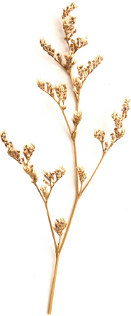

지혜과 지용의 결혼식에 초대합니다
김동하 🤍 김찬실의 장남 김지용
홍상직 🤍 노재숙의 차녀 홍지혜
초대의 말
서로에게 뜻긾은 날을 맞이하게 되었습니다.
두 사람이 하나되는 자리에
소중한 분들을 초대합니다.
참석하여 축하해주시면
그 마음 감사히 안고
행복하게 살겠습니다.
일시 및 장소
2020년 11월 08일 일요일 오전 11시
아이웰웨딩홀 1층(단독홀)
서울 서초구 반포대로 138 (서초동 1719-4)
지하철
[2호선 서초역] 8번 출구 앞
자가용
...
[2호선 서초역] 8번 출구 앞